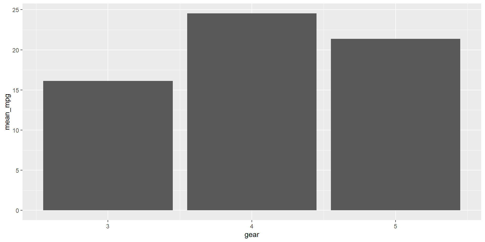

V1 V2 V3 V4 V5 V6
1 Country Year Status Life expectancy Adult Mortality infant deaths
2 Afghanistan 2015 Developing 65.0 263 62
3 Afghanistan 2014 Developing 59.9 271 64
4 Afghanistan 2013 Developing 59.9 268 66
5 Afghanistan 2012 Developing 59.5 272 69
6 Afghanistan 2011 Developing 59.2 275 71
V7 V8 V9 V10 V11 V12
1 Alcohol percentage expenditure Hepatitis B Measles BMI under-five deaths
2 0.01 71.27962362 65 1154 19.1 83
3 0.01 73.52358168 62 492 18.6 86
4 0.01 73.21924272 64 430 18.1 89
5 0.01 78.1842153 67 2787 17.6 93
6 0.01 7.097108703 68 3013 17.2 97
V13 V14 V15 V16 V17 V18
1 Polio Total expenditure Diphtheria HIV/AIDS GDP Population
2 6 8.16 65 0.1 584.25921 3.3736494e7
3 58 8.18 62 0.1 612.696514 327582.0
4 62 8.13 64 0.1 631.744976 3.1731688e7
5 67 8.52 67 0.1 669.959 3.696958e6
6 68 7.87 68 0.1 63.537231 2.978599e6
V19 V20 V21
1 thinness 1-19 years thinness 5-9 years Income composition of resources
2 17.2 17.3 0.479
3 17.5 17.5 0.476
4 17.7 17.7 0.47
5 17.9 18.0 0.463
6 18.2 18.2 0.454
V22
1 Schooling
2 10.1
3 10.0
4 9.9
5 9.8
6 9.5Data management, data cleaning and R style
Xác định đường dẫn
- Path là vị trí, hay địa chỉ, hay đường dẫn lưu file data trong máy tính
Tip
Trong Windows, khi copy path vào R cần sửa lại theo 1 trong 2 cách sau:
- Sửa tất cả dấu
\thành/:C:/Documents/Github/R-Together/day1/data - Sửa tất cả dấu
\thành\\:C:\\Documents\\Github\\R-Together\\day1\\data
Đường dẫn tuyệt đối
- Trong ví dụ trên,
C:/Documents/Github/R-Together/day1/datalà đường dẫn tuyệt đối (absolute path). - Là path đầy đủ từ đầu ổ đĩa cho đến file hay folder hiện tại.
Đường dẫn tương đối
Mỗi máy sẽ lưu ở 1 đường khác nhau, do đó nếu sử dụng đường dẫn tuyệt đối để làm việc nhóm thì sẽ gặp khó khăn.
Là path ngắn gọn hơn, có thể từ folder đến file cần mở
day1/data(relative path).Nếu dùng Github, đường dẫn tương đối dễ dàng cho việc chia sẻ code
~Github/R-Together/day1/data.
Quy tắc đặt tên file
Để tránh bị lỗi trong quá trình sử dụng R, nên đặt tên files, folders theo các quy tắc sau: - Không đặt tên có dấu tiếng Việt. - Không đặt tên quá dài. - Không đặt tên có các kí tự đặc biệt như /, \, &, , , (, ), tốt nhất chỉ nên đặt chữ và số. - Không đặt tên chữ viết hoa viết thường lẫn lộn, nếu cần thì chỉ đặt theo quy luật camelCase (viết hoa chữ cái đầu của các từ sau từ đầu tiên, ví dụ dataSoiHcm) hoặc PascalCase (viết hoa chữ cái đầu của tất cả các từ, ví dụ DataSoiHcm). - Không có khoảng trống " " trong tên, có thể đặt kiểu camelCase, hoặc sử dụng dấu -, _ thay thế các khoảng trống: ví dụ không dùng tên data soi HCM 2023.xlsx mà có thể đặt là dataSoiHcm2023.xlsx, hoặc data-soi-hcm-2023.xlsx, hoặc data_soi_hcm_2023.xlsx.
Đọc data vào R (Text files)
- Các file như
.txt,.csv,.jsonđều là text files, là những file mà đọc được bằng Notepad
Đọc data vào R (Text files)
Đọc data vào R (Binary files)
Các file như
.xlsx,.dta,.sasđều là binary files, là những file phải đọc bằng phần mềm chuyên dụng.Package
readxlđể đọc file.xlsx(hoặc.xls).Package
havenđể đọc file.dta,.sas.
Đọc data vào R (Binary files)
# A tibble: 6 × 21
id gioitinh ngaysinh huyen xa tinh `VGB <24` `VGB >24` VGB_1 VGB_2
<dbl> <chr> <chr> <chr> <chr> <chr> <chr> <chr> <chr> <chr>
1 1 nam 27/02/2024 Bình Ch… Phườ… Thàn… 28/02/20… 29/02/20… 10/0… 20/0…
2 2 nữ 06/03/2024 Huyện T… Phườ… Thàn… 07/03/20… 08/03/20… 23/0… 27/0…
3 3 nữ 27/01/2024 Thành p… Phườ… Thàn… 28/01/20… 29/01/20… 08/0… 18/0…
4 4 nữ 12/02/2024 Hóc Môn Xã Đ… Thàn… 13/02/20… 14/02/20… 17/0… 27/0…
5 5 nữ 21/02/2024 Bình Ch… Xã B… Thàn… 21/02/20… 20/02/20… 23/0… 09/0…
6 6 nữ 07/03/2024 Quận 7 Phú … Thàn… 07/03/20… 08/03/20… 23/0… 02/0…
# ℹ 11 more variables: VGB_3 <chr>, `VGB_4+` <chr>, HG_1 <chr>, HG_2 <chr>,
# HG_3 <chr>, `HG_4+` <chr>, UV_1 <chr>, UV_2 <chr>, UV_3 <chr>,
# `UV_4+` <chr>, tinhtrang <chr>Đọc data vào R (Binary files)
# A tibble: 6 × 28
case_id generation infection_date date_onset hosp_date
<chr> <dbl> <dttm> <chr> <dttm>
1 5fe599 4 2014-05-08 00:00:00 2014-05-13 2014-05-15 00:00:00
2 8689b7 4 NA 2014-05-13 2014-05-14 00:00:00
3 11f8ea 2 NA 2014-05-16 2014-05-18 00:00:00
4 b8812a 3 2014-05-04 00:00:00 2014-05-18 2014-05-20 00:00:00
5 893f25 3 2014-05-18 00:00:00 2014-05-21 2014-05-22 00:00:00
6 be99c8 3 2014-05-03 00:00:00 2014-05-22 2014-05-23 00:00:00
# ℹ 23 more variables: date_of_outcome <dttm>, outcome <chr>, gender <chr>,
# hospital <chr>, lon <dbl>, lat <dbl>, infector <chr>, source <chr>,
# age <chr>, age_unit <chr>, row_num <dbl>, wt_kg <dbl>, ht_cm <dbl>,
# ct_blood <dbl>, fever <chr>, chills <chr>, cough <chr>, aches <chr>,
# vomit <chr>, temp <dbl>, time_admission <chr>, merged_header <chr>,
# x28 <chr>Tại sao cần làm sạch với R?
Có thể được viết thành quy trình kiểm tra dữ liệu tự động, kết hợp thống kê mô tả và trực quan hóa để phát hiện các vấn đề cần làm sạch.
Tất cả các bước làm sạch đều được ghi lại.
Tiết kiệm thời gian làm sạch dữ liệu mới.
Đối tượng và câu văn trong R
alà đối tượng, và 2 là giá trị của đối tượng.Nếu a = 3, b = 2, và c = a x b thì kết quả?
Đối tượng và câu văn trong R
- Đối tượng có thể là giá trị, vectơ, ma trận hoặc data.frame
[1] "tbl_df" "tbl" "data.frame"Đối tượng và câu văn trong R
Lệnh hoặc chức năng là những câu văn giao tiếp với máy tính trong R.
- Tên câu lệnh (): thể hiện ý nghĩa câu lệnh dùng để làm gì.
- Tên tham số (): yêu cầu chi tiết.
- Để gán giá trị cho tham số, chúng ta cần sử dụng = thay vì sử dụng <-.
Đối tượng và câu văn trong R
Ví dụ:
[1] 1000- Max: tìm giá trị lớn nhất của 1 biến
- x: tham số đầu vào, chọn cột id trong dữ liệu df
- na.rm=TRUE: loại bỏ giá trị missing cột id trước khi tìm giá trị lớn nhất.
Tip
Để đọc hướng dẫn sử dụng của một lệnh, hãy nhập ?command-name.
Làm sạch dữ liệu
Quá trình làm sạch dữ liệu thường bao gồm các bước sau:
Làm sạch tên cột.
Kiểm tra kiểu dữ liệu.
Kiểm tra giá trị.
Định dạng bảng theo các quy tắc làm sạch dữ liệu.
Nối các bảng (nếu cần).
Xử lý dữ liệu lỗi.
Loại dữ liệu trong R
| Classes | Explanation | Examples |
|---|---|---|
numeric |
dữ liệu dạng số | 2, 3.14, -1000, 2e6, etc |
logical |
dữ liệu dạng đúng/sai (boolean) (TRUE/FALSE) |
TRUE/FALSE |
character |
dữ liệu dạng ký tự (hay còn gọi là string), được đặt trong dấu ngoặc kép "".đối tượng dạng ký tự thì không thể tính toán |
"Hello world", "R Together" |
Date |
dữ liệu ngày tháng | 2024-12-09, s, etc |
factor |
dữ liệu dạng phân loại (categorical) | sex, economic status, etc |
data frame |
dữ liệu dạng bảng | |
tibble |
dữ liệu dạng bảng tương tự như data.frame, sự khác biệt chính là tibble in đẹp hơn trong R console |
Các giá trị đặc biệt
| Value | Description |
|---|---|
NA |
Có nghĩa là Not Available. Biểu thị các giá trị bị thiếu. |
NULL |
Biểu thị giá trị không xác định/không có. (ví dụ: numb <- NULL biểu thị giá trị cho biến numb là không xác định) |
NaN |
Viết tắt của Not a Number. Biểu thị số không thể biểu diễn. |
Inf/-Inf |
Dương vô cực/ Âm vô cực |
Chuyển đổi dữ liệu
as.numeric()chuyển sang numericas.character()chuyển sang characteras.factor()chuyển sang factoras.Date()chuyển sang Date (Be carefully)as.logical()chuyển sang logicalifelse()có thể sử dụng để tạo biến mớiis.na()kiểm tra dữ liệu bị thiếu, trả về kiểu giá trị logical
Làm sạch tên cột
Quy tắc cho tên cột thường bao gồm:
Ngắn.
Không có khoảng trắng (thay thế bằng dấu gạch dưới
_).Không có ký tự đặc biệt (
&, #, <, >, …) hoặc dấu câu.Không bắt đầu bằng số.
Sử dụng clean_names() trong gói janitor để tự động hóa tên cột.
Làm sạch tên cột
[1] "id" "gioitinh" "ngaysinh" "huyen" "xa" "tinh"
[7] "VGB <24" "VGB >24" "VGB_1" "VGB_2" "VGB_3" "VGB_4+"
[13] "HG_1" "HG_2" "HG_3" "HG_4+" "UV_1" "UV_2"
[19] "UV_3" "UV_4+" "tinhtrang" [1] "id" "gioitinh" "ngaysinh" "huyen" "xa" "tinh"
[7] "vgb_24" "vgb_24_2" "vgb_1" "vgb_2" "vgb_3" "vgb_4"
[13] "hg_1" "hg_2" "hg_3" "hg_4" "uv_1" "uv_2"
[19] "uv_3" "uv_4" "tinhtrang"Caution
Nếu bạn không sử dụng <- thì R sẽ chỉ trả về kết quả của các câu lệnh nhưng df sẽ không thay đổi.
Chuyển đổi dữ liệu
tibble [1,000 × 21] (S3: tbl_df/tbl/data.frame)
$ id : num [1:1000] 1 2 3 4 5 6 7 8 9 10 ...
$ gioitinh : chr [1:1000] "nam" "nữ" "nữ" "nữ" ...
$ ngaysinh : chr [1:1000] "27/02/2024" "06/03/2024" "27/01/2024" "12/02/2024" ...
$ huyen : chr [1:1000] "Bình Chánh" "Huyện Thạnh Phú" "Thành phố Vĩnh Long" "Hóc Môn" ...
$ xa : chr [1:1000] "Phường Bình Hưng Hòa" "Phường 01" "Phường Phú Thuận" "Xã Đông Thạnh" ...
$ tinh : chr [1:1000] "Thành phố Hồ Chí Minh" "Thành phố Hồ Chí Minh" "Thành phố Hồ Chí Minh" "Thành phố Hồ Chí Minh" ...
$ vgb_truoc_24: chr [1:1000] "28/02/2024" "07/03/2024" "28/01/2024" "13/02/2024" ...
$ vgb_sau_24 : chr [1:1000] "29/02/2024" "08/03/2024" "29/01/2024" "14/02/2024" ...
$ vgb_1 : chr [1:1000] "10/03/2024" "23/03/2024" "08/02/2024" "17/02/2024" ...
$ vgb_2 : chr [1:1000] "20/03/2024" "27/03/2024" "18/02/2024" "27/02/2024" ...
$ vgb_3 : chr [1:1000] "20/03/2024" "11/04/2024" "19/02/2024" "28/02/2024" ...
$ vgb_4 : chr [1:1000] "04/04/2024" "26/04/2024" "19/02/2024" "28/02/2024" ...
$ hg_1 : chr [1:1000] "28/02/2024" "07/03/2024" "28/01/2024" "12/02/2024" ...
$ hg_2 : chr [1:1000] "02/03/2024" "22/03/2024" "07/02/2024" "16/02/2024" ...
$ hg_3 : chr [1:1000] "12/03/2024" "06/04/2024" "17/02/2024" "02/03/2024" ...
$ hg_4 : chr [1:1000] "12/03/2024" "16/04/2024" "27/02/2024" "12/03/2024" ...
$ uv_1 : chr [1:1000] "27/02/2024" "07/03/2024" "27/01/2024" "12/02/2024" ...
$ uv_2 : chr [1:1000] "28/02/2024" "22/03/2024" "06/02/2024" "22/02/2024" ...
$ uv_3 : chr [1:1000] "09/03/2024" "06/04/2024" "21/02/2024" "08/03/2024" ...
$ uv_4 : chr [1:1000] "19/03/2024" "21/04/2024" "02/03/2024" "23/03/2024" ...
$ tinhtrang : chr [1:1000] "theo dõi" "ngừng theo dõi" "ngừng theo dõi" "theo dõi" ...Khi nhập dữ liệu vào R, các cột sẽ tự động được chuyển đổi sang kiểu dữ liệu phù hợp nhất. - Ngày: R không thể tự động chuyển đổi sang Ngày vì định dạng này không khớp. - Giới tính phải được chuyển đổi thành yếu tố. - Trạng thái phải được chuyển đổi thành logic.
Chuyển đổi dữ liệu
tibble [1,000 × 21] (S3: tbl_df/tbl/data.frame)
$ id : num [1:1000] 1 2 3 4 5 6 7 8 9 10 ...
$ gioitinh : Factor w/ 2 levels "nam","nữ": 1 2 2 2 2 2 1 1 1 1 ...
$ ngaysinh : Date[1:1000], format: "2024-02-27" "2024-03-06" ...
$ huyen : chr [1:1000] "Bình Chánh" "Huyện Thạnh Phú" "Thành phố Vĩnh Long" "Hóc Môn" ...
$ xa : chr [1:1000] "Phường Bình Hưng Hòa" "Phường 01" "Phường Phú Thuận" "Xã Đông Thạnh" ...
$ tinh : chr [1:1000] "Thành phố Hồ Chí Minh" "Thành phố Hồ Chí Minh" "Thành phố Hồ Chí Minh" "Thành phố Hồ Chí Minh" ...
$ vgb_truoc_24: Date[1:1000], format: "2024-02-28" "2024-03-07" ...
$ vgb_sau_24 : Date[1:1000], format: "2024-02-29" "2024-03-08" ...
$ vgb_1 : Date[1:1000], format: "2024-03-10" "2024-03-23" ...
$ vgb_2 : Date[1:1000], format: "2024-03-20" "2024-03-27" ...
$ vgb_3 : Date[1:1000], format: "2024-03-20" "2024-04-11" ...
$ vgb_4 : Date[1:1000], format: "2024-04-04" "2024-04-26" ...
$ hg_1 : Date[1:1000], format: "2024-02-28" "2024-03-07" ...
$ hg_2 : Date[1:1000], format: "2024-03-02" "2024-03-22" ...
$ hg_3 : Date[1:1000], format: "2024-03-12" "2024-04-06" ...
$ hg_4 : Date[1:1000], format: "2024-03-12" "2024-04-16" ...
$ uv_1 : Date[1:1000], format: "2024-02-27" "2024-03-07" ...
$ uv_2 : Date[1:1000], format: "2024-02-28" "2024-03-22" ...
$ uv_3 : Date[1:1000], format: "2024-03-09" "2024-04-06" ...
$ uv_4 : Date[1:1000], format: "2024-03-19" "2024-04-21" ...
$ theodoi : logi [1:1000] TRUE FALSE FALSE TRUE TRUE TRUE ...Lọc dữ liệu
| Ký hiệu | Mô tả |
|---|---|
x == y |
x bằng y |
x != y |
x khác y |
x < y |
x nhỏ hơn y |
x <= y |
x nhỏ hơn hoặc bằng y |
is.na(x) |
x là giá trị thiếu |
A & B |
x và y |
A | B |
x hoặc y |
! |
không |
Lọc dữ liệu
- Những người có Quận 2.
- Những người có
vgb_1trước ngày 20 tháng 2 năm 2024. - Những người có Quận 2 hoặc
vgb_1trước ngày 20 tháng 2 năm 2024. - Những người có Quận 2 và
vgb_1trước ngày 20 tháng 2 năm 2024.
Loại dữ liệu dạng chuỗi
| Function | Package | To use |
|---|---|---|
tolower |
base | Chữ thường |
toupper |
base | Chữ in |
string_to_title |
stringr | Viết hoa chữ cái đầu tiên của mỗi từ |
stri_trans_general |
stringi | Xóa dấu |
Loại dữ liệu ngày tháng
| Function | Package | To use |
|---|---|---|
differtime |
base | Tính khoảng cách giữa 2 điểm thời gian |
month/year |
lubridate | Trả về tháng/ năm |
quarter |
lubridate | Chuyển ngày tháng sang quý |
today |
lubridate | Trả về ngày tháng hiện tại |
dmy, ymd, mdy |
lubridate | Chuyển đổi thành nhiều định dạng khác nhau |
Chuyển đổi dữ liệu ngày tháng
- Tìm trẻ em được tiêm vắc-xin
vgb_2trong vòng 2 tháng sau khi sinh
Kiểm tra dữ liệu
Thông thường bao gồm các hoạt động chính:
Kiểm tra giá trị NA.
Kiểm tra các giá trị ngoại lai và phạm vi của mỗi cột.
Kiểm tra giá trị giữa các cột (nếu cần).
Kiểm tra giá trị NA
[1] NATip
Trong R, NA là một giá trị đặc biệt không thể tính toán hoặc so sánh với các kiểu dữ liệu khác (kết quả luôn trả về NA).
- Thay thế NA bằng giá trị khác.
- Xóa các hàng có chứa NA.
Kiểm tra outliers
Để nhanh chóng kiểm tra xem dữ liệu có chứa giá trị ngoại lai hay không, chúng ta có thể sử dụng boxplot để tìm các điểm giá trị cách xa các giá trị còn lại.

Tip
Trong nhiều trường hợp, dữ liệu được coi là giá trị ngoại lai vẫn có thể là giá trị hợp lệ và nên được giữ lại để phân tích.
Nếu giá trị ngoại lai là sai, hãy xử lý nó giống như các giá trị bị thiếu.
Kiểm tra outliers

Tidy data
Một tập dữ liệu có các hàng và cột.
Mỗi cột là một biến.
Mỗi hàng là một quan sát.
Mỗi ô chỉ chứa 1 giá trị.
Tidy data
date cases_chn cases_kor cases_aus cases_jpn cases_mys
1 2020-01-20 0 0 0 0 0
2 2020-01-21 31 0 0 0 0
3 2020-01-23 262 0 0 0 0Hoặc
# A tibble: 3 × 3
date country cases
<date> <chr> <dbl>
1 2020-01-20 cases_chn 0
2 2020-01-20 cases_kor 0
3 2020-01-20 cases_aus 0Joint table
| Lệnh | Mô tả | GIF |
|---|---|---|
left_join() |
Lấy bảng bên trái làm tham chiếu và tìm kiếm các hàng tương ứng của bảng bên phải để nối. Nếu các hàng không có hàng tương ứng để nối, trả về giá trị NA |
 |
inner_join() |
Lấy bảng bên trái làm tham chiếu và tìm kiếm các hàng tương ứng của bảng bên phải để nối. Các hàng không có hàng tương ứng để nối sẽ bị xóa |
 |
full_join() |
Giữ lại tất cả các hàng của 2 bảng sau khi nối Các hàng của 2 bảng không thể nối sẽ được thay thế bằng các giá trị NA |
 |
Xử lý dữ liệu lỗi
Chỉnh sửa giá trị dữ liệu.
Lọc trùng.
Lọc các hàng theo điều kiện.
Chỉnh sửa giá trị dữ liệu
Giá trị bị thiếu.
Dữ liệu TRUE/FALSE được hiển thị khác nhau trong dữ liệu gốc (ví dụ: Đánh dấu X hoặc để trống trong tệp excel).
Tính đồng nhất của dữ liệu.
replace_na(): thay thế giá trị NA bằng giá trị được cung cấp
is.na(): dữ liệu trống NA có giá trị TRUE và ngược lại
ifelse(): mã hóa điều kiện đơn giản, nếu có thì không
case_when(): mã hóa các giá trị cho các trường hợp nhất định
Lọc hàng và cột
Loại bỏ giá trị bị thiếu.
Lọc theo hàng.
Lọc theo giá trị.
Lọc trùng.
left_joint(),inner_joint(),full_joint(): nối bảngfilter(): lọc hàng và cột theo điều kiệndistinct(): lọc trùng
Tidyverse

Tại sao chọn Tidyverse?
Mọi lệnh trong tidyverse đều có chung một cấu trúc và mẫu nhất quán.
Code R của bạn có thể sạch hơn và dễ theo dõi hơn so với Based-R.
Bạn chỉ cần cài đặt mọi thứ một lần, thay vì nhiều package khác nhau cho những thứ khác nhau.
Warning
- Nó chỉ là một tập hợp các R Packages
- Bạn không cần phải sử dụng tidyverse khi sử dụng R
Hàm tidyverse thường dùng
dplyr::select(): để chọn các cột từ df/tibbledplyr::mutate(): để thay đổi hoặc tạo cột mới từ df/tibbledplyr::group_by()vàdplyr::summarise(): để nhóm dữ liệu và tóm tắt nó bằng cách sử dụng một hàm, ví dụ: trung bình, tối đa, tối thiểu, tổngtidyr::pivot_longer(): để chuyển đổi một df/tibble từ định dạng rộng sang định dạng dài (ít cột hơn, nhiều hàng hơn)tidyr::pivot_wider(): để chuyển đổi một df/tibble từ định dạng dài sang định dạng rộng (ít hàng hơn, nhiều cột hơn)
Piping with %>%

- Đây có phải là là cách viết tốt không? Chúng ta có thể cải thiện nó hơn nữa không?
Piping with %>%

Hoặc

Piping with %>%
Một công cụ mạnh mẽ để thể hiện một chuỗi hành động.
Nó giúp bạn viết mã dễ đọc và dễ hiểu hơn.
Trong R, bạn có thể chuyển đổi giữa các hàm bằng cách sử dụng toán tử
%>%hoặc|>.Phím tắt: Cmd+Shift+M or Ctrl+Shift+M.
Tip
R Together will use %>%
Functions
- Hàm là một chuỗi mã có thể tái sử dụng.
- Có thể tạo hàm bằng cú pháp.
Functions
Ví dụ: một hàm đơn giản
[1] "Hello newbies"
[1] "We are SWAPER"Functions
Functions
Functions
[1] 25[1] 32Exercise tại lớp
Mở file từ đường dẫn
day1/inclass.R.Import dữ liệu
Exercise tại lớp
min q1 median q3 max
0.0 65.5 128.0 950.5 19461.0 Exercise tại lớp
Đa số các cột đều có cấu trúc
cases_{country_code}Tạo function để tính cho các quốc gia khác.
Exercise tại lớp
- Thay đổi
colname =là sẽ làm tương tự cho các quốc gia khác.
min q1 median q3 max
0.0 65.5 128.0 950.5 19461.0